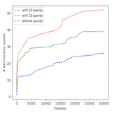
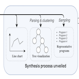

Very excited to share the great news that our paper "Scam2Prompt: A Scalable Framework for Auditing Malicious Scam Endpoints in Production LLMs" has been accepted to ICML 2026. See everyone in Seoul, South Korea! Tweet
Ph.D. Candidate · University of Toronto
Zhiyang Chen
I am visiting the Advanced Software Technologies Lab at ETH Zurich, hosted by Prof. Zhendong Su. I am a Ph.D. candidate at the University of Toronto, advised by Prof. Fan Long in the PROSE Lab.
My research focuses on LLM security and blockchain security. I have worked on problems in LLM-assisted code generation, DeFi protocols, rollups, and prediction markets. More broadly, I have also collaborated on compilers, program analysis, and CUDA kernel generation.
My Past Experience
Industry Experience
I spent one year as a part-time Research Engineer at Zircuit, working with Dr. Z, Dr. Martin Derka, and Dr. Jan Gorzny. This was invaluable start-up experience: I joined an early-stage team building a complex zk-rollup from scratch, worked through fast research and engineering cycles, and learned from exceptional colleagues and the broader global Web3 community.
Before that, I spent more than one year at Quantstamp, an established blockchain-security company, where I worked with Dr. Martin Derka on smart-contract auditing and automated vulnerability detection. This gave me experience in a stable, mature security organization with rigorous engineering practices, and it was where I helped bring my FlashSyn research into industrial practice.
Mentors
I am grateful to several mentors who shaped both my research taste and my growth. Prof. Jie Zhou has been giving me valuable advice on academic positions as I enter the later stage of my Ph.D. Prof. Qingkai Shi introduced me to the broader PLSE community in Asia and the related industry. Prof. Umang Mathur was my first mentor after undergrad and helped me transition from undergraduate study into graduate research. Prof. Xinyu Wang introduced me to programming languages research, and we collaborated with Prof. Tianyi Zhang on my first published paper. Prof. Paul A. Green first introduced me to the research world, where we finished my first research project on SIM.
News
Honored and deeply grateful to receive the Canada Graduate Research Scholarship – Doctoral. This journey has been shaped by many generous collaborators, mentors, and friends, and I am sincerely thankful for everyone who has supported, challenged, and believed in me along the way.
Attended ICSE 2026 and presented our paper "Enforcing Control Flow Integrity on DeFi Smart Contracts". The presentation recording is now available. Video
News Before 2026
Our paper "Enforcing Control Flow Integrity on DeFi Smart Contracts" has been accepted to ICSE 2026—see you in Rio!
Thrilled to attend OOPSLA 2025 for the Doctoral Symposium talk on “A Multi-Layer Dynamic Security Framework for DeFi Smart Contracts” and to serve as Session Chair coordinating the Sponsor Industry Forum.
Attended ICSE 2025 and was thrilled to present our paper on "A Methodology for Replicating Historical Exploits on EVM-Compatible Blockchains".
Our paper "Sequencer Level Security" has been accepted as a poster at ICBC 2025! See you in Rome - this technique is one of the main innovations behind Zircuit.
Attended ETH Denver as a hackathon judge and company booth presenter. Super excited to chat with industrial experts! Tweet
Attended SANER 2025 and was thrilled to present our paper on "Instrumenting Transaction Trace Properties in Smart Contracts: Extending EVM for Real-Time Security".
Zircuit's roadmap for 2025 was released: two of my papers have been integrated and will be the focus. Read more: Zircuit Technical Roadmap Part II: Scaling Securely
Our paper "Instrumenting Transaction Trace Properties in Smart Contracts: Extending EVM for Real-Time Security" has been accepted for publication at SANER-IWBOSE 2025. See you in Montreal!
Our paper "A Methodology for Replicating Historical Exploits on EVM-Compatible Blockchains" has been accepted for publication at ICSE-WETSEB 2025. See you in Ottawa!
Our tool FlashSyn was adopted by Quantstamp as part of its Economic Exploit Analysis service. CoinDesk · The Block
Publications
Selected Publications
Zhiyang Chen, Tara Saba, Xun Deng, Xujie Si, Fan Long, “Scam2Prompt: A Scalable Framework for Auditing Malicious Scam Endpoints in Production LLMs”, International Conference on Machine Learning (ICML), 2026.
Real-world security impact Our disclosures led to 62 previously unlisted phishing websites being confirmed and added to MetaMask’s eth-phishing-detect database (view an accepted report covering 14 additions).
[project] [paper] [OpenReview] [ICML Poster] [artifact] [dataset] [video]

Zhiyang Chen, Sidi Mohamed Beillahi, Pasha Barahimi, Cyrus Minwalla, Han Du, Andreas Veneris, Fan Long, “Enforcing Control Flow Integrity on DeFi Smart Contracts”, International Conference on Software Engineering (ICSE), 2026.
Zhiyang Chen, Ye Liu, Sidi Mohamed Beillahi, Yi Li, Fan Long, “OpenTracer: A Dynamic Transaction Trace Analyzer for Smart Contract Invariant Generation and Beyond” (ASE 2024 Tool Demonstrations).
First open-source OpenTracer is the first open-source transaction-trace visualizer to display both decoded function calls and storage-state changes for any EVM-compatible blockchain.
[paper] [artifact] [slides] [video]
Zhiyang Chen, Ye Liu, Sidi Mohamed Beillahi, Yi Li, Fan Long, “Demystifying Invariant Effectiveness for Securing Smart Contracts” (FSE 2024).
[paper] [extended paper] [artifact] [benchmarks] [invariant study results] [slides] [poster]
Zhiyang Chen, Sidi Mohamed Beillahi, Fan Long, “FlashSyn: Flash Loan Attack Synthesis via Counter Example Driven Approximation” (ICSE 2024).
Research → Production FlashSyn was adopted by Quantstamp and developed into Economic Exploit Analysis, a production service for detecting flash-loan attack vulnerabilities in deployed and pre-deployment EVM protocols. Media coverage: CoinDesk and The Block.
Industry presentation Presented as “Automated Flash Loan Attack Synthesis” at the DeFi Security Summit in Paris, France (2023); also listed in Zircuit’s official talks archive.
[paper] [extended paper] [artifact] [slides] [Quantstamp product] [Quantstamp video]
Tianyi Zhang, Zhiyang Chen, Yuanli Zhu, Priyan Vaithilingam, Xinyu Wang, Elena L. Glassman, “Interpretable Program Synthesis”, Proceedings of CHI 2021.
[paper] [preview] [video] [artifact]
Other Publications
Jan Gorzny, Zhiyang Chen, Krzysztof Gogol, “Ethereum Layer Two Client Similarity: Geth”, SANER 2026 IWBOSE.
Industry presentation Presented by Jan Gorzny at EthCC[9] in Cannes, France (2026); recording.
Zhiyang Chen, “A Multi-Layer Dynamic Security Framework for DeFi Smart Contracts”, OOPSLA/SPLASH 2025 Doctoral Symposium.
Martin Derka, Jan Gorzny, Diego Siqueira, Donato Pellegrino, Marius Guggenmos, Zhiyang Chen, “Sequencer Level Security”, IEEE International Conference on Blockchain and Cryptocurrency (ICBC 2025 Poster).
Zircuit launch feature During Zircuit’s 2024–2025 L2 launch phase, SLS was the chain’s signature security feature: it inspected transactions before block inclusion and quarantined suspected exploits. Zircuit announced the research as a new security paradigm, made it central to its technical roadmap, and described the launch-era mainnet as powering a $2 billion TVL ecosystem. See the technical architecture.
Industry presentations Presented by Martin Derka at ETHDenver in Denver, USA (2024), ETH Prague in Prague, Czech Republic (2024), and the Zircuit Layer Two Meetup during EDCON in Tokyo, Japan (2024); presented by Jan Gorzny at Ethereum Zurich in Zurich, Switzerland (2024). Zircuit’s official talks archive also records “Enhancing L2 Security with Sequencer-Level Protection” at the DeFi Security Summit in Bangkok, Thailand (2024).
Zhiyang Chen, Phillip Kemper, Yi Liu, Jan Gorzny, Diego Siqueira, Yuekang Li, Donato Pellegrino, and Martin Derka, “A Methodology for Replicating Historical Exploits on EVM-Compatible Blockchains”, 7th International Workshop on Emerging Trends in Software Engineering for Blockchain (ICSE-WETSEB 2025).
Zircuit roadmap Zircuit’s 2025 technical roadmap identifies this WETSEB methodology as part of the operating evidence behind SLS: the team replayed real-world historical exploits in end-to-end tests and confirmed that the system detected them.
Industry presentations Related work was presented as “Challenges of Replicating Historical Exploits” by Jan Gorzny at EthCC[8] in Cannes, France (2025), and by Zhiyang Chen at the IEEE Canada Blockchain Forum in Toronto, Canada (2025).
Zhiyang Chen, Jan Gorzny, Martin Derka, “Instrumenting Transaction Trace Properties in Smart Contracts: Extending EVM for Real-Time Security”, 8th International Workshop on Blockchain-Oriented Software Engineering (SANER-IWBOSE 2025).
Zircuit roadmap Zircuit’s 2025 technical roadmap directly links this paper alongside the original SLS research as a basis for SLS 2.0 and 3.0, including sub-transaction checks for violated smart-contract invariants and more complex transaction- and block-level analysis.
Education
University of Toronto
PhD in Computer Science, 2027 (Expected)
Advisor: Prof. Fan Long
ETH Zurich
Visiting ETH Zurich, May 2026 - Jan 2027
Host: Prof. Zhendong Su
University of Michigan, Ann Arbor
Bachelor of Engineering in Computer Science, minor in Mathematics, Summa Cum Laude, Sept 2019 - May 2021
Advisor: Prof. Xinyu Wang
Shanghai Jiao Tong University
Bachelor of Science in Electrical and Computer Engineering, minor in Entrepreneurship, Sept 2017 - Aug 2021
Awards & Grants
- Canada Graduate Research Scholarship – Doctoral, 2026
- ACM SIGSOFT CAPS Travel Grant, ACM SIGSOFT CAPS, 2024
- DCS Travel Grant, University of Toronto, 2024
- Bell Graduate Scholarship, 2024
- Mitacs Accelerate Fellowship with Bank of Canada, 2023-2024
- Co-author of Ethereum Foundation Grant FY23-0882 (Back-End API Standard for L2 Block Explorers), 2023 Author credit in the project repository: Jeff Chen, Junior Research Engineer at Quantstamp.
- Smart Contract Research Forum Grant, 2022
- The Wolfond Scholarship in Wireless Information Technology, 2021
- Outstanding graduate of Shanghai Jiao Tong University, 2021
- James B. Angell Scholar, UMich, 2021
Services & Teaching
Paper Review Services
- Shadow PC member, International Conference on Software Engineering(ICSE 2026) 2025
- Reviewer, Automated Software Engineering (Springer) 2025
- Reviewer, IEEE Transactions on Software Engineering (TSE) 2025
- Reviewer, ACM Transactions on Software Engineering and Methodology (TOSEM) 2025
- Junior PC Member, The Mining Software Repositories (MSR) 2025
- Reviewer, IEEE Transactions on Network and Service Management (TNSM) 2024, 2025
- Sub-reviewer, FSE 2023, ICSE 2024, ASE 2024 2022–2023
Artifact Evaluation Services
- Artifact Evaluation PC Member, SOSP 2025 2025
- Artifact Evaluation PC Member, CAV 2025 2025
- Artifact Evaluation PC Member, ICSE 2025 2025
- Artifact Evaluation PC Member, PLDI 2024 2024
Other Service Roles
- Session Chair, Sponsor Industry Forum @ ICFP/SPLASH 2025, Singapore 2025
- Hackathon Judge, ETHDenver, Denver, Colorado, United States 2025
- Student Volunteer (Remote), OOPSLA 2022 2022
- Tau Beta Pi–Michigan Gamma volunteer, Ann Arbor, Michigan (K–12 engineering outreach) 2020
Teaching
- TA of CSC2125: Topics in Software Engineering: Blockchain Technology & Engineering, UofT Fall 2025
- Head TA of CSC488/2107: Compilers and Interpreters, UofT Winter 2023
- TA of CSC373: Algorithm Design, Analysis & Complexity, UofT Fall 2022
- TA of CSC263: Data Structures and Analysis, UofT Winter 2022
- TA of CSC108: Introduction to Computer Programming, UofT Fall 2021
- Grader of MATH 450 Advanced Mathematics for Engineers I, UMich Winter 2021
- Grader of MATH 214 Linear Algebra, UMich Fall 2020
Miscellaneous
-
2026 July: I was inspired by drh, who maintains SQLite, and by the blessing he places in the source code in lieu of a legal notice:
“May you do good and not evil.
May you find forgiveness for yourself and forgive others.
May you share freely, never taking more than you give.” -
Update (2026/04) My research taste remains problem-driven, but I now believe impactful research draws insight from the ground up, then abstracts and generalizes solutions to broader domains. Older notes: 2025/10, 2025/03, 2024/08.
(2025/10)I now see philosophy as a way to understand ourselves and the world, and what excites me most is turning that insight into changes; engineering and science share that mission and can even reshape who we are and how the world works.
(2025/03): I roughly discovered my current research taste - “dig deep enough, the novelty just comes out naturally.”
(2024/08) I started investigating the 'philosophy' in my Doctor of Philosophy program. - Favorite tagline: “I'm a dreamer, but I'm also practical enough to version control it.”
- Pirates of the Caribbean is my favorite movie. I try to learn how to become a Pirate.
- I'm not religious, but I'm an afterlife believer: people will either reunite with their deceased loved ones in another world or return back to this world in another form.
-
Former volunteer experiences with Toronto-based charities
Toronto Cat Rescue: I helped foster cats at home in 2025.
Toronto Fort York Food Bank: I helped distribute free food to people in need from 2024 to 2025. -
Former volunteer experiences in Ann Arbor, Michigan
- K–12 volunteer preparation (Fall 2020): I completed Boy Scouts of America Youth Protection Training and a University of Michigan background check before volunteering with children through Tau Beta Pi’s K–12 outreach program.
- Cub Scouts Engineering Day (Fall 2020): I volunteered with local Cub Scouts, helping run hands-on engineering activities including bridge building, circuits, and related STEM modules.
Earlier Undergraduate Research Projects
Click to Expand Projects

Accelerate Regular Expression Synthesis via Subexpression Queries
Individual research project of EECS499
with Prof. Xinyu Wang
[report]
This project proposes an algorithm to synthesize the most probable sub-expressions of a ground-truth regular expression based on input–output examples and evaluates the effectiveness of subexpression queries.

Interpretable Program Synthesis
CHI '21: Proceedings of the 2021 Conference on Human Factors in Computing Systems
with Tianyi Zhang, Xinyu Wang, Elena Glassman
This work unveils the synthesis process by providing representations that explain and let users guide the program synthesis with varying levels of detail.
Real-Time and Virtual Driving Simulator
Project of Multidisciplinary Design Program
with Prof. Paul Green
[2-min presentation slides] [code]
This project presents a GUI tool designed to assist researchers in conducting traffic experiments using the CARLA real-time driving simulator.